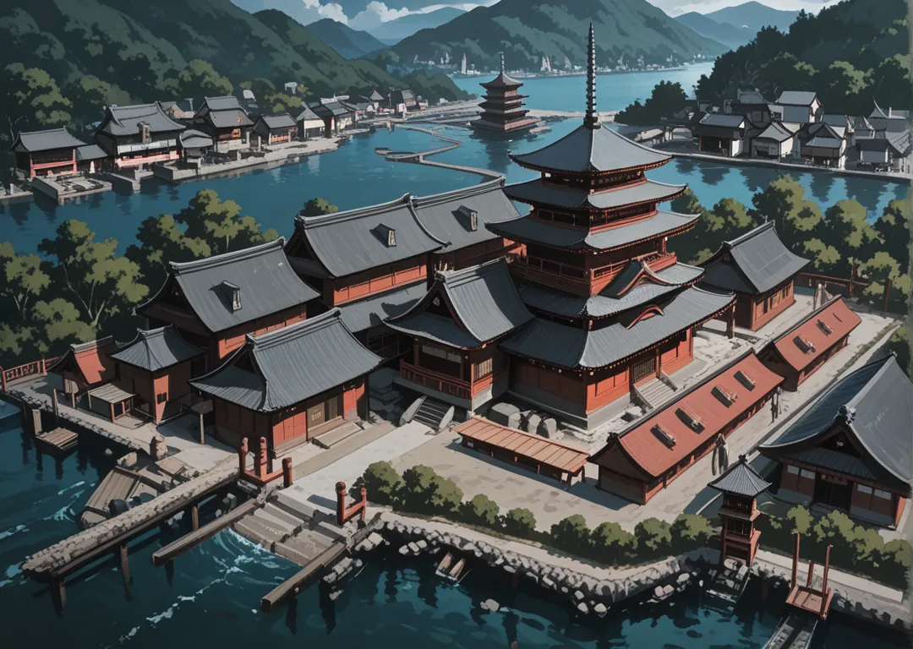

Mayores
Same (Tiburón) · Mekajiki (Pez espada) · Fugu (Pez globo) · Akumasen (Raya manta) · Kurage (Medusa)
Al oeste Mizu, el agua, con su capital lindando con el mar y llena de canales que la surcan. Texto íntegro p.4.

Same (Tiburón) · Mekajiki (Pez espada) · Fugu (Pez globo) · Akumasen (Raya manta) · Kurage (Medusa)
Hitode (Estrella de Mar) · Kani (Cangrejo)
Un canal bloqueado por un Kappa exige peaje. ¿Pagan, negocian o pelean?
Same y Mekajiki disputan la pesca de altura; los PJs median mientras un monstruo acecha bajo los canales.
Capital sobre el mar, cruzada por 7 canales navegables. Casas sobre pilotes, mercados flotantes y el Matsuri de la Marea donde se lanzan lámparas al agua.
Shogun Mizu no Same Jin (48, cicatriz de tiburón). Su Daimyo Kurage Aoi controla el peaje de los canales.
Mizu valora la paciencia del agua. Exporta pescado, perlas y sal. Importa arroz de Tsuchi y madera de Kaze. Los niños aprenden a nadar antes que a caminar.
Daimyo Same Kuro (44, colmillo de tiburón al cuello). Dojo de abordaje. Su hijo quiere casarse con una Tengoku.
Daimyo Kurage Hina (26, velo traslúcido). Curandera que cobra en secretos.
Daimyo Kani Genta (58, caparazón como escudo). Defiende el dique roto con su vida.